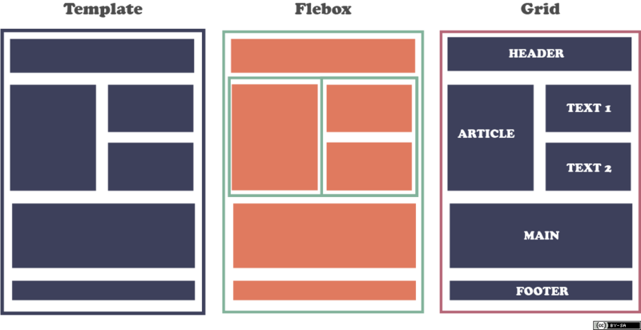

El propósito de este sitio web pretende impulzar el aprendizaje de
los temas Etiquetas semánticas, CSS Grid Al crear su página web, estas herramientas seran de gran ayuda al mometos de optimizar sus diseños, hacer que sus páginas web sean más accesibles y mejorar la forma en que aparecen sus páginas en los resultados de búsqueda
Etiquetas semánticas
Las nuevas etiquetas semánticas, incorpora HTML5 para sustituir el excesivo uso de las etiquetas div y dar un sentido más lógico a la estructura de la página web. También en HTML5 se incluyen las nuevas etiquetas de contenido multimedia, de formato de dibujo, mejora de formularios, etc. ¡Otra diferencia con respecto a HTML 4 es la simplificación de la sentencia doctype, que se reduce a !DOCTYPE HTML. Por otro lado, HTML5 flexibiliza la sintaxis de la siguiente forma: En HTML5 no se diferencia entre mayúsculas y minúsculas, es decir, se pueden utilizar etiquetas en mayúsculas, en minúsculas e incluso mezclarlas ambas y la página sigue siendo válida. No se exigen las etiquetas de cierre de los elementos. El uso de comillas en los atributos es opcional.

CSS Grid
Grid Layout es un nuevo modelo de diseño para CSS que tiene poderosas capacidades para controlar el tamaño y la posición de las cajas y su contenido. A diferencia del diseño de caja flexible, que está orientado a un solo eje, el diseño de cuadrícula está optimizado para diseños bidimensionales: aquellos en los que se desea alinear el contenido en ambas dimensiones.
Además, debido a su capacidad para colocar elementos explícitamente en la cuadrícula, Grid Layout permite transformaciones dramáticas en la estructura de diseño visual sin requerir los cambios de marcado correspondientes. Al combinar las consultas de medios con las propiedades CSS que controlan el diseño del contenedor de cuadrícula y sus elementos secundarios, los autores pueden adaptar su diseño a los cambios en los factores de forma del dispositivo, la orientación y el espacio disponible, al tiempo que conservan una estructura semántica más ideal de su contenido en todas las presentaciones.
CSS Grid contiene funciones de diseño dirigidas a los desarrolladores de aplicaciones web. El CSS grid se puede utilizar para lograr muchos diseños diferentes. También se destaca por permitir dividir una página en áreas o regiones principales, por definir la relación en términos de tamaño, posición y capas entre partes de un control construido a partir de primitivas HTML.
Al igual que las tablas, el grid layout permite a un autor alinear elementos en columnas y filas. Sin embargo, con CSS grid son posibles muchos más diseños y de forma más sencilla que con las tablas. Por ejemplo, los elementos secundarios de un contenedor de cuadrícula podrían posicionarse para que se solapen y se superpongan, de forma similar a los elementos posicionados en CSS.
